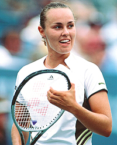

Should We Ban Players for Recreational Drugs?¶
By Allen Fox, Ph.D.¶

Cocky? Yes. But did she deserve the death penalty?
Let me be clear to start with that I am not advocating that athletes or anyone else indulge in cannabis, cocaine, or any other recreational drug. The health hazards of most are well-known and severe.
I just think that banning athletes from participating in their sports or fining them for using recreational drugs is unreasonable and unfair. (This is just my opinion, of course, and I don't expect what I say here to cause any rule changes, but it will, hopefully, provide food for thought.)
An example of severe punishment was banning Martina Hingis, a five-time Slam winner, for two years for testing positive for cocaine at Wimbledon in 2007 and basically ending her career. They gave her the tennis death penalty.
Not a Fan
I have never been a Hingis fan because she was so cocky when she was winning Slams, making statements to the effect that players like Steffi Graf were old and over the hill and that she and the other young, pretty new players were taking over. (One of my fondest memories is of the 1999 French Open final when \"old\" and \"over the hill\" Steffi Graf, having suffered multiple knee operations, gave her a good whipping.) Nevertheless, I still feel Hingis' punishment was excessive.

**OK, the use of steroids needs to be banned.**
Performance Enhancing
Ok, players using known performance-enhancing drugs like the anabolic agents - Andro, Norandrosterone, Nandrolone, etc. - should obviously be banned. There is no reasonable argument in their favor. These drugs build muscle mass and strength give the users an unfair competitive advantage. But recreational drugs are a totally different matter.
Recreational
Since \"recreational\" drugs are labeled as such rather than as \"performance enhancing\" I'm not sure what the rationale is for punishing athletes for using them. There is no convincing evidence that they help performance. (otherwise they'd be labeled as \"performance enhancing\"). In fact, from what information I could gather, I would guess they are more likely to hurt performance rather than help it.
Of course, nobody knows the true effects on athletic performance of drugs like cannabis, cocaine, and methamphetamine, (or nicotine and caffeine, for that matter) so my guess is as good as anybody's. And it's hard for me to imagine how cannabis, which is classified as a psychoactive drug (meaning it changes perception and other brain functions), could be helpful to one's tennis game. If my livelihood were on the line I would be scared to death playing while high on cannabis.

**How does cocaine really affect performance?**
Cocaine is a stimulant, as is methamphetamine, but so are nicotine and caffeine. Most tournament players are jittery enough to begin with and need to relax more than to be revved up. Andre Agassi stated in his book, \"Open,\" that he took crystal meth when he was at a mental low point. He thought it would hurt his game, but did it anyway, partially because it would hurt his game, and at the time he hated tennis. In any case, the actions of these stimulants are relatively immediate and short term, so getting high the night before wouldn't increase a player's energy during the match - in fact, quite the opposite since there is often a rebound effect of exhaustion.
Maybe taking stimulants during a match - for example, in the fifth set when you are tiring - should be a punishable event. (Of course there is no evidence that the banned players were doing this.) Arguing against this is the fact that players are already allowed to take various legal stimulants during matches - caffeinated beverages like Coke, coffee, or tea - but they usually don't because the experts think they are better off with sports drinks containing nutrients and electrolytes.

**Can legal stimulants have an adverse affect?**
In fact Michael Bergeron, Ph.D. advised against, during play, using energy drinks like Red Bull in the March 2010 Tennis magazine, saying, \"there's a lot of negative things that can also go with these drinks.\" Too much caffeine, for example, can make you jittery and hurt your game. \"I'd rather see tennis players get their energy from eating right and resting well,\" he says.
Rationale for Action
Joseph de Pencier, of the Canadian Centre for Ethics in Sport, states the reason for banning recreational drugs like cannabis: \"If you accept the premise that doping can involve health risks, doping can involve actions contrary to the spirit of sport, quite apart from the performance enhancement, then treating cannabinoids in this way is quite justified.\"
My translation of his statement is that they are banned because they are bad for you and because using them is not nice. He could have added the usual arguments for banning: athletes are role models for young people and their use of recreational drugs, many of which are illegal, sets a bad example.
Rationale Against Taking Action

**Contrary to the \"spirit\" of sports?**
I would like to discuss here each reason usually given for punishing athletes, one reason at a time, and show that they make little sense.
1. Because they are bad for the athlete's health. This is almost too absurd to justify a counter argument. Protecting the athlete's health is up to the athlete himself or herself (and maybe their trainers, parents, coaches, etc.). It is reasonable for the authorities to voice concerns, kind people that they are, but not to punish transgressions. McDonald's hamburgers, Twinkies, cigarettes, scuba-diving, motorcycle-riding, spare-ribs, candy bars and about 1000 other things are bad for an athlete's health or pose health risks. If athletes want to eat these things or do these things and are willing to accept the health risks, foolish as this may be, what business is it of the authorities to punish them for doing so?
2. Because they are illegal. Speeding in one's car is also illegal as is not paying one's taxes. How about a D.W.I.? Misguided as these choices may be, many people do it anyway and are willing to risk the consequences which, if they are caught, will be imposed by the legal authorities after trial in a court of law. The tennis authorities are simply piling on in an area that is not their business.
3. Because athletes are role models for young people and are setting a bad example. The authorities could solve the role model problem by simply not testing for recreational drugs in the first place. Then nobody would know, and there would be no bad example. It is also unhelpful, if this is the issue (which, of course, it isn't), to share positive test results with the media and public.

**Twinkies may not be good for you, but should they be banned?**
Moreover, people in other highly publicized vocations - politicians, movie stars, rock stars, etc. - are also role models. Why are they not also drug-tested and banned from their professions if they are found to be users? Why single out athletes? In addition, the most frequently used recreational drug is alcohol, but even though it's legal, drinking it still sets a bad example since it can lead to alcoholism. Smoking sets an even worse example, as nicotine is highly addictive and a killer over time. Should athletes be banned from their sport for setting the bad example of drinking alcohol, smoking, or eating McDonalds hamburgers?
4. Because it runs counter to the spirit of the sport. This argument is the vaguest of all. I'm not sure who gets to define what the \"spirit of the sport\" is or should be. (I suppose the authorities are.) I'm also not sure what the proper penalty should be for acting counter to the questionably determined \"spirit of the sport,\" but giving Hingis the athletic death penalty strikes me as excessive.
Since the usual reasons given for punishing athletes for using recreational drugs (as stated above) seem spurious (at least to my logic system), I would like to put forth the only plausible explanation I can think of. I suspect they may have simply mixed together in their minds performance enhancing and recreational drugs.

**Just Say No\--but to what when?**
The repeated the mantra \"Drugs are bad, drugs are bad!\" so many times that they unconsciously felt impelled to apply the same punishments for both without further thought. Having already decided to punish recreational drug use, they then scrambled afterward to come up with plausible reasons to justify themselves. It is a version of \"ready, shoot, aim.\"
Finally, the authorities seem to be rather flexible in their acceptance of excuses for failing their drug tests and in their application of penalties. (When they are protecting something as vague as the \"spirit of the sport' they buy themselves a great deal of leeway.) For example, in 1997 when Andre Agassi tested positive for drugs he lied and claimed he had accidentally and unknowingly drunk from an associate's spiked drink (a likely story), and asked for understanding and leniency. After due consideration, the ATP decided against imposing any penalties at all. (After all, boys will be boys!) I know this may sound cynical, but could their decision have been influenced by the fact that Agassi was the biggest name in the game and a huge draw at the gate and with the sponsors? Hingis, on the other hand, was well past her prime and on the way down when her harsh penalty was imposed.
Coincidentally, they also gave the athletic death penalty (a two year suspension) to unknown New Zealander, Mark Nielsen, in 2006 for using finasteride, a drug that reduces hair loss. (In fact, I use it myself, and it hasn't helped my game a bit.) They claimed that failure to check if the medication might contain a prohibited substance \"indicates a serious dereliction of duty on the part of any player who participates in a sport governed by the WADA Code.\" Their attitude was, \"We've got to make an example of him.\" So \"Off with his head!\" You will have noted, I'm sure, that Nielsen was not a household name nor was he a strong factor in enhancing gate receipts. It strikes me that unequal doses of self-interest on the part of tennis authorities make for unequal dispensations of justice.

**Was the ATP decision influenced by the fact that Agassi was the biggest name in tennis?**
Unfortunately, we all do lots of things that aren't good for us. We have choices and we often make wrong ones. It's too bad, but hopefully we learn to do better in the future. If we don't, then it's too bad for us. But in my opinion we should have the freedom to do these things as long as we don't hurt others.
The authorities should protect me from your acts that can hurt me, but not from my acts that can hurt me. In summary, my feelings on the use of recreational drugs, be it by athletes or anyone else, is that it's mostly a problem for the user himself or herself. To the extent it doesn't hurt anybody else or give an unfair advantage in sport, it would seem that it calls for rehabilitation and education rather than punishment.
Read More From Allen!
Visit him at www.allenfoxtennis.net
|  | Tennis is mentally the most difficult sport due to it's personal nature which makes winning and losing feel more |
| important than they are. In this new book, Allen offers his proven solutions to problems such as choking, reducing | |
| stress, finishing matches, and developing confidence. Based on a life time of high level play and coaching success, | |
| it's a must for all competitive players. | |
| [ to | |
| Order](http://www.amazon.com/Tennis-Winning-Mental-Allen-Fox/dp/0615407765/ref=sr_1_1?ie=UTF8&qid=1336083459&sr=8-1). |
|  | eminently preferable to losing. In his new book, The |
| Winner's Mind, Allen lays out an original step-by-step | |
| plan for succeeding at any of life's endeavors, based on | |
| his first hand and very personal observations of the | |
| careers of both world-class tennis players and successful | |
| businessman. The bottom line is that even if you are not a | |
| born champion--and only a tiny percentage of us are--you | |
| can still use the success strategies of champions to tilt | |
| the odds in your favor. Writing with brutal honesty and dry | |
| humor, Fox lays out the common mental characteristics of | |
| winners in sports and in life. He explains the critical | |
| role of intellect over emotion. He analyzes the struggle | |
| between ambition and fear and the insidious and pervasive | |
| fear of failure that undermines so many of us. He then | |
| outline how to confront and overcome these fears in your | |
| life and career, even when they are initially subconscious. | |
| Must reading from one of the great thinkers in tennis, and | |
| a Renaissance Man in life. [ to | |
| Order](http://www.tennis-warehouse.com/descpage-MIND.html). | |
| To purchase this book you can also send a check for \$17.95 | |
| to Allen Fox, 1120 Inverness Place, San Luis Obispo, CA. | |
| 93401. The price includes shipping. |
|  | insightful analysts in modern tennis. A top 10 |
| American player from the glory days before Open | |
| tennis, Fox played many of the legendary greats, among | |
| them Roy Emerson, Rod Laver, Stan Smith, and Arthur | |
| Ashe. At Pepperdine he developed the men's tennis | |
| program into an elite contender for national titles, | |
| and gave Brad Gilbert the insights that became the | |
| foundation for \"Winning Ugly\". His book Think to Win | |
| is a modern classic. He has also starred in a series | |
| of acclaimed videos, including Pro Secrets of Match | |
| Play and Allen Fox's Ultimate Tennis Lesson. | |